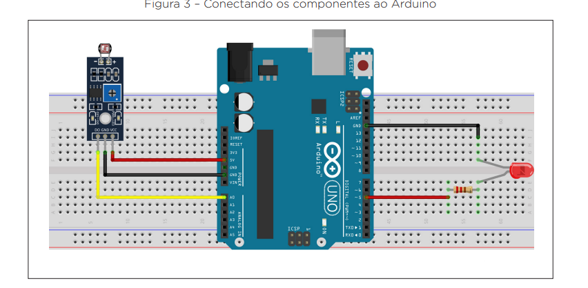
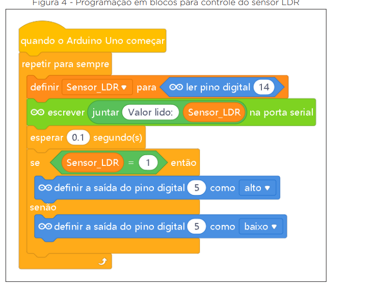

Desligue o Arduino
Retire o cabo USB antes de posicionar ou alterar qualquer componente.
Monte um circuito que percebe a mudança de luz e controla um LED vermelho automaticamente.
O objetivo é compreender como o Arduino recebe o sinal do sensor e toma uma decisão para ligar ou desligar o LED.
A imagem apresenta a montagem geral. Para que toda a turma tenha a mesma referência, siga as coordenadas indicadas abaixo.

Retire o cabo USB antes de posicionar ou alterar qualquer componente.
Com o sensor voltado para cima, encaixe os três pinos nas posições F5, F6 e F7. Use as inscrições do próprio módulo para reconhecer DO/S, GND e VCC.
Ligue J5 ao A0, J6 ao GND e J7 ao 5V, respeitando a função indicada no módulo.
Coloque a perna longa, o ânodo, em E29. Coloque a perna curta, o cátodo, em E30. O lado achatado do LED também marca o cátodo.
Encaixe o resistor de 220 ohms entre A25 e A29. O resistor não possui polaridade.
Ligue um jumper de E25 até D7 e outro de A30 até GND.
| Ligação | Origem | Destino | Função |
|---|---|---|---|
| Jumper 1 | J5 | Arduino A0 | Sinal do LDR |
| Jumper 2 | J6 | Arduino GND | Terra do sensor |
| Jumper 3 | J7 | Arduino 5V | Alimentação do sensor |
| Jumper 4 | E25 | Arduino D7 | Comando do LED |
| Jumper 5 | A30 | Arduino GND | Retorno do LED |
Depois de conferir a montagem, conecte o Arduino pelo cabo USB, adicione o dispositivo Arduino Uno e escolha a porta correta.

Crie uma variável chamada Sensor_LDR.
Adicione o bloco quando o Arduino Uno começar.
Insira o bloco repetir para sempre.
Defina Sensor_LDR para ler pino digital 14. No Arduino Uno, o pino 14 corresponde ao A0. Se o programa oferecer A0 diretamente, selecione A0.
Escreva Valor lido: junto da variável na porta serial e espere 0,1 segundo.
Se Sensor_LDR = 1, defina a saída digital D7 como alto. Senão, defina D7 como baixo.
Depois de enviar o programa ao Arduino, faça o teste em três momentos e observe tanto o LED quanto o valor mostrado no monitor serial.
Se a sala não ficar escura: cubra o LDR completamente com a mão ou com um pedaço de papel opaco.
Verifique VCC em 5V, GND em GND, DO/S em A0 e o LED em D7 com o resistor.
Selecione a porta do Arduino e aguarde a confirmação do mBlock.
Confira se o valor muda entre 0 e 1 quando a iluminação muda.
Gire lentamente o pequeno potenciômetro azul do módulo até a mudança acontecer no ponto desejado.
Se o LED responder de forma invertida, troque alto por baixo e baixo por alto no bloco se/senão.
| Sintoma | O que conferir |
|---|---|
| LED não acende | Polaridade do LED, resistor, jumper em D7 e blocos configurados para o pino 7. |
| LED fica sempre aceso | Potenciômetro do módulo e mudança do valor no monitor serial. |
| Leitura não muda | DO/S em A0, leitura no pino 14/A0, VCC e GND. |
| Arduino não conecta | Cabo USB, porta selecionada e dispositivo Arduino Uno. |
| Circuito aquece | Desconecte imediatamente o USB e procure uma ligação direta entre 5V e GND. |